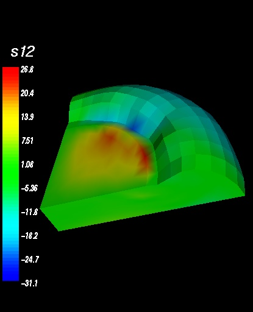
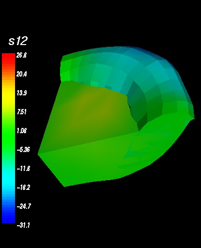

scale_factor

Set the scale factor of the vector displacements. A scale factor from 0 to 1 decreases the displacements, and a scale factor greater than 1 increases the displacements.
Ex:
0.body> scale_factor = 3
0.body> Update
